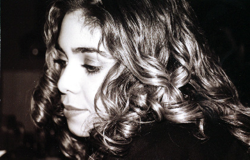
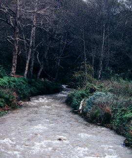
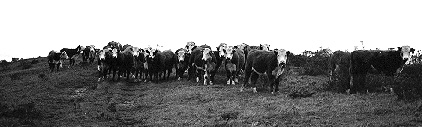

This is my friend, Rocio.

This photo was taken on an overcast day off of Old Coast Road in Big Sur.

These cows were also found along Old Coast Road...my roommate and I took a road trip and when we took a break, these cows were there to greet us. The photo was originally in color, but was then desaturated and cropped in Adobe Photoshop 5.0. This may not be a great portfolio picture, but I like it so much I decided to include it.
Updated by Andrea Arredondo
5/16/00